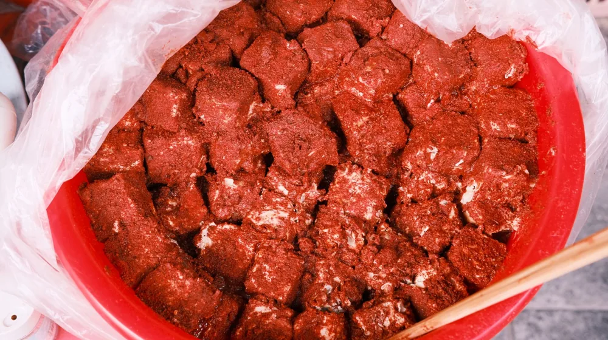

종가 내림음식 조리법, 평범한 레시피와 다른 3가지 핵심
사진: Theodore Nguyen / Pexels (무료 이미지, 출처 표기)
종가 내림음식, 왜 특별할까요?

종부님이 전하는 내림음식 조리법이 일반적인 요리책이나 인터넷 레시피와는 분명 다른 무언가가 있다고 생각하시나요? 이는 단순한 요리법을 넘어, 종가(宗家, 대를 잇는 맏집)의 깊은 역사와 철학, 그리고 삶의 지혜가 고스란히 담겨 있기 때문입니다.
내림음식(내림飮食)은 한 집안의 정체성을 지키고 대대로 전수되는 전통 요리를 말하며, 특히 종부(宗婦, 종가의 맏며느리)는 이를 계승하고 발전시키는 중요한 역할을 합니다. 단순한 맛을 넘어 건강과 상징적 의미까지 담고 있는 내림음식 조리법의 핵심 특징을 살펴보겠습니다.
재료 선정: 오랜 경험이 만든 최상의 기준
내림음식 조리법의 첫 번째 특징은 재료 선정에 있습니다. 일반 레시피가 접근성 좋은 보편적인 재료를 사용하는 반면, 내림음식은 최상의 품질을 고집하며 때로는 직접 경작하거나 특별한 산지에서 공수해 온 재료를 사용합니다. 계절성과 신선도를 최우선으로 고려하며, 특정 품종이나 생산 시기에 대한 집안 대대로의 노하우가 축적되어 있습니다.
예를 들어, 장(醬)을 담글 때는 단순히 좋은 콩을 넘어 특정 지역의 콩을 선별하거나, 수확 후 적정 기간 숙성된 콩만을 사용하는 식입니다. 이러한 재료에 대한 깊은 이해와 고집이 내림음식의 독보적인 맛을 만드는 바탕이 됩니다.
조리 과정: 시간과 정성이 빚어내는 깊은 맛
두 번째 특징은 조리 과정에서 드러나는 시간과 정성입니다. 내림음식 조리법은 빠르고 간편함보다는 오랜 기다림과 섬세한 손길을 중요하게 여깁니다. 발효나 숙성 과정을 거치는 음식이 많으며, 각 단계마다 온도, 습도, 시간 등을 감각적으로 조절하는 종부님만의 노하우가 결정적인 영향을 미칩니다.
측정 가능한 계량보다는 '손맛'(손으로 익힌 감각적인 맛의 기술)에 의존하는 경우가 많습니다. 이는 수치화하기 어려운 집안 고유의 맛과 전통을 지키는 비법이 됩니다. 섣불리 단계를 생략하거나 재촉하지 않고, 재료 본연의 맛이 충분히 우러나도록 기다리는 인내가 필요합니다.
맛의 비결: 집안 대대로 이어온 손맛과 지혜
내림음식의 세 번째이자 가장 중요한 특징은 바로 그 '맛'에 담긴 비결입니다. 이는 단순히 음식의 맛을 넘어, 가족의 건강과 화합을 기원하는 종부님의 마음, 그리고 집안의 역사가 농축된 결과물입니다. 특히 집안마다 독특한 맛을 내는 장맛(전통 장류의 맛)은 내림음식의 핵심으로, 수십 년에서 수백 년에 걸쳐 이어져 온 씨간장이나 씨된장이 그 맛의 깊이를 더합니다.
간을 맞추는 법, 재료의 궁합, 조리 도구의 활용법 등 모든 과정에 걸쳐 집안의 고유한 지혜가 녹아 있습니다. 외부 환경의 변화에도 흔들림 없이 전통의 맛을 유지하려는 종부님의 뚝심과 철학이 어우러져, 그 어떤 것으로도 대체할 수 없는 특별한 맛을 만들어냅니다.
내림음식 조리 시 놓치지 말아야 할 주의사항
내림음식 조리법을 익히고 싶다면 몇 가지 주의할 점이 있습니다. 첫째, 서두르지 않는 인내가 필수적입니다. 오랜 시간과 정성을 요구하는 과정이 많으므로, 결과만을 보고 재촉해서는 안 됩니다. 둘째, 전통의 가치와 의미를 이해하려는 태도가 중요합니다. 단순히 레시피를 따라 하는 것을 넘어, 그 안에 담긴 문화적 맥락을 파악해야 합니다.
셋째, 숙련된 이의 지도 아래 배우는 것이 좋습니다. 종부님이나 전문가의 설명을 통해 단순한 동작을 넘어 손맛의 비결과 감각적 판단력을 익히는 것이 중요합니다. 계량화된 정보가 부족할 수 있으므로, 실제 조리 과정을 반복하며 체득하는 시간이 필요합니다.
종가 내림음식, 어디서 경험하고 배울 수 있을까요?
종가 내림음식의 깊은 맛과 지혜를 직접 경험하거나 배우고 싶다면 다음과 같은 방법들을 고려해 볼 수 있습니다. 2026년 08월 기준으로 다양한 기관에서 전통 음식 관련 프로그램을 운영하고 있습니다.
- 전통 음식 교육기관: 한국전통문화전당, 한국음식문화재단 등 여러 전통 음식 관련 기관에서 종가 음식이나 궁중 음식을 기반으로 한 강좌를 개설합니다.
- 지방자치단체 프로그램: 일부 지자체에서는 지역 특색을 살린 전통 음식 체험이나 교육 프로그램을 운영하기도 합니다.
- 종가 방문 체험: 드물지만 일부 종가에서는 사전 예약을 통해 내림음식 체험이나 시식 기회를 제공하기도 합니다.
각 기관이나 프로그램의 상세 내용은 시기에 따라 달라질 수 있으므로, 방문 전 해당 기관의 공식 홈페이지를 통해 최신 정보를 확인하시길 권장합니다.
일반 레시피와 내림음식 조리법 특징 비교
🔗 이 글도 함께 보면 좋아요: 정책서민금융, 나에게 맞는 상품은? 신청 자격부터 핵심 종류까지 완벽 정리
관련 추천 상품
이 포스팅은 쿠팡 파트너스 활동의 일환으로, 이에 따른 일정액의 수수료를 제공받습니다.